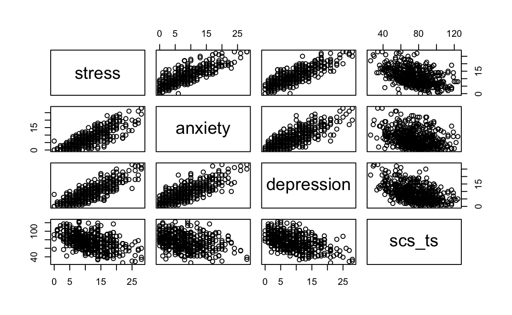
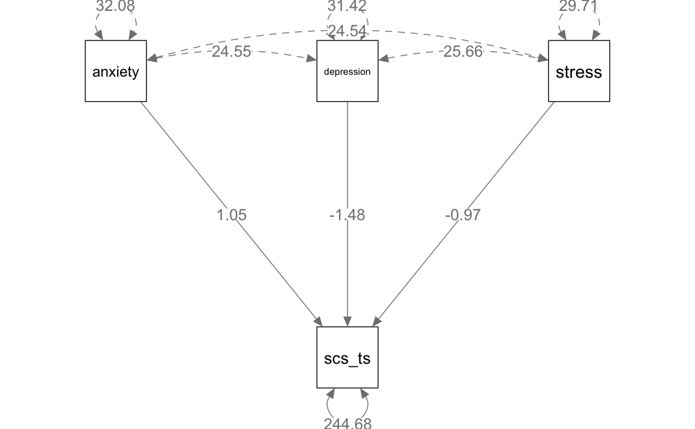
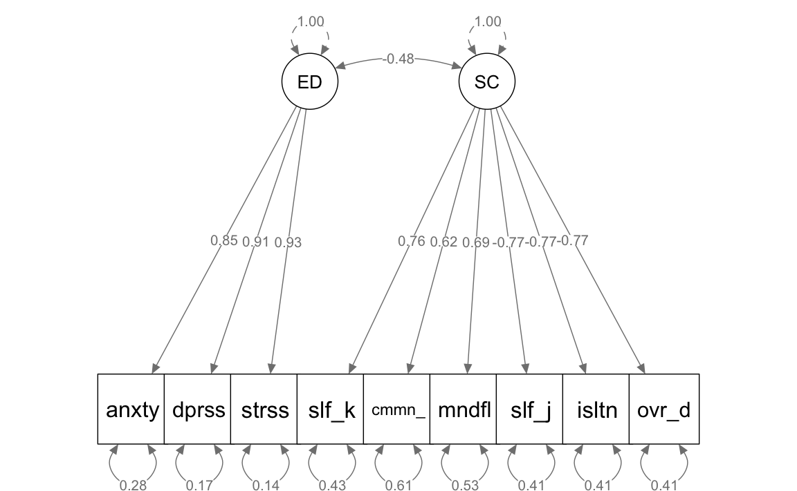

here::here("code", "_common.R") |>
source()
# Load packages
if (!requireNamespace("pacman")) install.packages("pacman")
pacman::p_load(lavaanExtra, psych, tidyr, mvnormalTest, semPlot, DiagrammeRsvg, rsvg, effectsize)48 Introduzione ai Modelli SEM
In questo capitolo imparerai a
- comprendere le basi dei Modelli di Equazioni Strutturali (SEM) e le loro componenti principali;
- distinguere tra variabili osservate e latenti e il loro ruolo nei SEM;
- interpretare la struttura di covarianza e la struttura delle medie nei modelli SEM;
- utilizzare il software
lavaanper specificare, stimare e valutare un modello SEM; - confrontare l’approccio SEM con tecniche tradizionali, come la regressione multipla e l’analisi fattoriale.
Prerequisiti
Preparazione del Notebook
48.1 Introduzione
La ricerca in psicologia si basa sull’indagine di costrutti teorici che, essendo non direttamente osservabili, possono essere studiati solo in modo indiretto attraverso le risposte dei partecipanti a indicatori osservabili (ad esempio, le risposte a item di un questionario). I capitoli precedenti sull’analisi fattoriale hanno illustrato come valutare la struttura fattoriale di questi costrutti latenti, identificando quali item siano buoni indicatori per misurare tali costrutti. Questo processo è fondamentale per sviluppare strumenti validi e affidabili volti a quantificare i costrutti latenti che caratterizzano la ricerca psicologica. Tuttavia, una buona misurazione non rappresenta quasi mai il fine ultimo: i ricercatori desiderano solitamente esplorare le relazioni tra costrutti, confrontare differenze medie o rispondere a domande del tipo: “La self-compassion è un fattore protettivo contro il burnout?”.
Quando i ricercatori dispongono di sole variabili osservate come predittori e outcome, e desiderano esaminare gli effetti di uno o più predittori su un singolo outcome, possono utilizzare metodi di analisi familiari, come la regressione multipla. Tuttavia, se le domande di ricerca implicano costrutti latenti o richiedono di testare sistemi complessi di relazioni tra variabili, è necessario ricorrere a tecniche di analisi più flessibili in grado di modellare simultaneamente relazioni tra variabili osservate e latenti: questo è il campo dei Modelli di Equazioni Strutturali (SEM, Structural Equation Modeling).
Alla base dei SEM si trova una combinazione di analisi fattoriale e analisi dei percorsi (path analysis). L’analisi dei percorsi può essere vista come un’estensione della regressione multipla, poiché consente di stimare e testare effetti diretti tra variabili. Tuttavia, a differenza della regressione multipla, che si concentra sugli effetti diretti di uno o più predittori su un unico outcome, l’analisi dei percorsi consente di analizzare sia effetti diretti sia indiretti tra interi insiemi di variabili predittive e di outcome in modo simultaneo. Questo approccio permette a una variabile di fungere contemporaneamente da predittore e da outcome: una variabile può essere prevista da una o più altre variabili, mentre a sua volta funge da predittore per altre variabili. In altre parole, l’analisi dei percorsi offre la possibilità di costruire modelli complessi, purché tutte le variabili siano osservate.
L’inclusione di variabili latenti richiede però di andare oltre l’analisi dei percorsi tradizionale. Grazie al lavoro pionieristico di Jöreskog e Van Thillo, è stato possibile integrare variabili latenti nei modelli di percorsi, dando vita a quella che oggi conosciamo come SEM. Questo approccio è stato reso progressivamente più accessibile da software sempre più intuitivi, contribuendo alla diffusione dei SEM nella psicologia e nelle scienze sociali.
48.1.1 Struttura e Obiettivi dei SEM
Un modello SEM tipico si compone di due parti principali:
-
La parte di misurazione, che collega i costrutti latenti a un insieme di variabili osservate o indicatori.
- La parte strutturale, che modella le relazioni ipotizzate tra i costrutti latenti.
L’obiettivo principale dei SEM è testare ipotesi teoriche specifiche tramite modelli che rappresentano le previsioni di tali ipotesi, utilizzando costrutti misurati attraverso variabili osservabili appropriate. I SEM fungono così da ponte tra teoria e osservazione, consentendo di tradurre concetti astratti in entità misurabili e di analizzarne le relazioni in modo sistematico e coerente con la teoria.
48.1.2 Considerazioni Critiche sull’Uso dei SEM
Nonostante la loro potenza, i SEM richiedono un uso critico e consapevole. Ogni modello statistico è una semplificazione della realtà, come sottolineato dal celebre aforisma: “Tutti i modelli sono sbagliati, ma alcuni sono utili”. Questo implica che un buon adattamento ai dati non garantisce una rappresentazione accurata della realtà. Modelli intrinsecamente imprecisi possono adattarsi bene ai dati, portando a conclusioni errate. Pertanto, la scelta dei modelli non deve essere un semplice esercizio statistico, ma un processo orientato allo sviluppo e al raffinamento di teorie valide. La revisione critica dei modelli, basata su evidenze empiriche e solidi principi teorici, è essenziale per un progresso scientifico affidabile.
48.2 Modelli di Regressione e Introduzione ai SEM
In questo capitolo, i Modelli di Equazioni Strutturali (SEM) vengono introdotti partendo dal caso più semplice: il modello di regressione multipla, reinterpretato e rappresentato all’interno di un framework SEM. L’obiettivo è fornire un ripasso rigoroso del modello di regressione lineare, evidenziando come possa essere formalizzato e implementato come un caso particolare di un modello SEM. Questa rappresentazione permette di estendere il concetto di regressione multipla a modelli più complessi che includono variabili latenti e relazioni strutturali.
Utilizzeremo dati empirici per illustrare l’approccio, focalizzandoci sulla Self-Sompassion Scale e sulle tre sottoscale del DASS-21: ansia, stress e depressione. Il campione analizzato comprende 526 studenti universitari iscritti a corsi di psicologia.
Le sottoscale del DASS-21 rappresentano variabili osservate che misurano concetti teorici distinti ma correlati. L’obiettivo è esplorare come il punteggio totale della Self-Compassion possa essere predetto dalle tre sottoscale del DASS-21 utilizzando un approccio di regressione multipla. Successivamente, questo modello sarà riformulato e stimato come un caso specifico di SEM.
L’implementazione in R mediante il pacchetto lavaan consentirà di confrontare i risultati della regressione tradizionale con quelli ottenuti dalla rappresentazione SEM, illustrando i vantaggi di quest’ultimo approccio, come la maggiore flessibilità e la possibilità di incorporare errori di misura nelle variabili osservate.
48.2.1 Preliminari
Importiamo i dati:
dat <- read.csv(
here::here("data", "dass_rosenberg_scs.csv"),
header = TRUE
)
dat |>
head()
#> stress anxiety depression rosenberg self_kindness common_humanity
#> 1 7 6 4 31 17 16
#> 2 3 2 1 32 14 14
#> 3 1 0 1 31 20 16
#> 4 12 11 13 34 12 6
#> 5 10 6 12 25 16 17
#> 6 5 1 2 31 14 14
#> mindfulness self_judgment isolation over_identification scs_ts
#> 1 16 11 8 10 98
#> 2 16 16 11 13 82
#> 3 16 13 6 9 102
#> 4 6 10 7 15 70
#> 5 13 17 16 18 73
#> 6 10 12 8 11 85dim(dat)
#> [1] 526 11Selezioniamo le variabili di interesse:
d_mr <- dat |>
dplyr::select(stress, anxiety, depression, scs_ts)Esaminiamo i diagrammi di dispersione tra le varie misure per verificare che la relazione tra le variabili sia lineare.
pairs(d_mr)
Convertiamo i dati in formato matriciale:
48.3 Modello di Regressione Lineare Multipla
Il modello generale di regressione lineare multipla (MLR) può essere espresso attraverso la seguente equazione:
\[ y_i = \beta_0 + \beta_1 x_{1i} + \cdots + \beta_p x_{pi} + \epsilon_i, \]
dove:
-
\(i = 1, \ldots, N\) identifica l’\(i\)-esima osservazione,
-
\(\beta_0\) è l’intercetta del modello,
-
\(\beta_1, \ldots, \beta_p\) sono i coefficienti di regressione associati alle variabili indipendenti,
-
\(\epsilon_i\) è il termine di errore per l’\(i\)-esima osservazione,
- Si assume che \(\epsilon_i\) sia indipendente dalle variabili esplicative \(x_{1i}, \ldots, x_{pi}\) e distribuito con media zero e varianza costante \(\sigma^2\).
In questa formulazione, \(y_i\) rappresenta il valore della variabile dipendente per l’\(i\)-esima osservazione, mentre i coefficienti \(\beta\) quantificano l’effetto delle variabili indipendenti \(x_{1i}, \ldots, x_{pi}\) su \(y_i\). Il termine di errore \(\epsilon_i\) cattura la varianza non spiegata dal modello lineare. Questa struttura consente di modellare relazioni lineari tra una variabile dipendente e più variabili indipendenti, fornendo una base per effettuare inferenze sui parametri \(\beta\).
48.3.1 Forma Matriciale del Modello
Il modello MLR può essere rappresentato in forma matriciale come:
\[ \mathbf{y} = \mathbf{X}\boldsymbol{\beta} + \boldsymbol{\epsilon}, \]
dove:
-
\(\mathbf{y}\) è un vettore \(N \times 1\) contenente i valori osservati della variabile dipendente,
-
\(\mathbf{X}\) è una matrice di progettazione \(N \times (p+1)\) che include le \(p\) variabili indipendenti e una colonna di uni per l’intercetta,
-
\(\boldsymbol{\beta}\) è un vettore \((p+1) \times 1\) dei coefficienti di regressione (inclusa l’intercetta),
- \(\boldsymbol{\epsilon}\) è un vettore \(N \times 1\) che rappresenta i termini di errore.
Le componenti del modello sono definite come segue:
\[ \mathbf{y} = \begin{pmatrix} y_1 \\ y_2 \\ \vdots \\ y_N \end{pmatrix}, \quad \boldsymbol{\epsilon} = \begin{pmatrix} \epsilon_1 \\ \epsilon_2 \\ \vdots \\ \epsilon_N \end{pmatrix}, \quad \mathbf{X} = \begin{pmatrix} 1 & x_{11} & \cdots & x_{p1} \\ 1 & x_{12} & \cdots & x_{p2} \\ \vdots & \vdots & \ddots & \vdots \\ 1 & x_{1N} & \cdots & x_{pN} \end{pmatrix}. \]
Ogni riga della matrice \(\mathbf{X}\) rappresenta un’osservazione e include i valori delle variabili indipendenti per quella osservazione, oltre a un uno per l’intercetta.
48.3.2 Metodo dei Minimi Quadrati
Il metodo dei minimi quadrati (Least Squares Estimation, LSE) mira a stimare i parametri \(\boldsymbol{\beta}\) minimizzando la somma dei quadrati degli errori (SSE), definita come:
\[ \text{SSE} = \boldsymbol{\epsilon}'\boldsymbol{\epsilon} = (\mathbf{y} - \mathbf{X}\boldsymbol{\beta})'(\mathbf{y} - \mathbf{X}\boldsymbol{\beta}). \]
Espandendo questa espressione:
\[ \text{SSE} = \mathbf{y}'\mathbf{y} - 2\boldsymbol{\beta}'\mathbf{X}'\mathbf{y} + \boldsymbol{\beta}'\mathbf{X}'\mathbf{X}\boldsymbol{\beta}. \]
Minimizzando la SSE rispetto a \(\boldsymbol{\beta}\) e ponendo la derivata prima pari a zero, si ottiene il sistema normale:
\[ \mathbf{X}'\mathbf{X}\hat{\boldsymbol{\beta}} = \mathbf{X}'\mathbf{y}. \]
Se la matrice \(\mathbf{X}'\mathbf{X}\) è invertibile, la soluzione per i coefficienti stimati è:
\[ \hat{\boldsymbol{\beta}} = (\mathbf{X}'\mathbf{X})^{-1}\mathbf{X}'\mathbf{y}. \]
Questa soluzione fornisce le stime dei coefficienti di regressione che minimizzano la discrepanza tra i valori osservati \(\mathbf{y}\) e quelli predetti \(\mathbf{X}\hat{\boldsymbol{\beta}}\) dal modello. In tal modo, si ottengono le migliori stime lineari e non distorte dei parametri, sotto le ipotesi classiche di regressione.
48.4 Regressione Multipla in R
Applichiamo il modello di regressione lineare multipla (MLR) ai dati disponibili, utilizzando sia la formulazione matriciale sia le funzioni predefinite di R. Come esempio, analizziamo le relazioni tra depressione, ansia, stress e una variabile dipendente (scs_ts) nei dati.
48.4.1 Preparazione dei Dati
Selezioniamo le variabili di interesse dal dataset:
dass <- d_mr |>
dplyr::select(depression, anxiety, stress)Creiamo la matrice di progettazione \(\mathbf{X}\), includendo una colonna di uni per l’intercetta:
X <- model.matrix(~ depression + anxiety + stress, data = dass)
head(X)
#> (Intercept) depression anxiety stress
#> 1 1 4 6 7
#> 2 1 1 2 3
#> 3 1 1 0 1
#> 4 1 13 11 12
#> 5 1 12 6 10
#> 6 1 2 1 548.4.2 Stima dei Coefficienti con la Formula Matriciale
Calcoliamo i coefficienti \(\boldsymbol{\beta}\) utilizzando la formula dei minimi quadrati:
\[ \hat{\boldsymbol{\beta}} = (\mathbf{X}'\mathbf{X})^{-1}\mathbf{X}'\mathbf{y}. \]
In R, il calcolo viene effettuato come segue:
48.4.3 Verifica dei Risultati con lm()
Confrontiamo i risultati ottenuti con la funzione lm():
I coefficienti stimati con il metodo matriciale e quelli calcolati da lm() devono coincidere.
48.4.4 Valori Predetti e Residui
Calcoliamo i valori predetti \(\hat{y}\) utilizzando i coefficienti stimati:
Calcoliamo i residui \(e = \mathbf{y} - \hat{\mathbf{y}}\):
e <- d_mr$scs_ts - yhat
cor(e, fm$residuals)
#> [,1]
#> [1,] 148.4.5 Somma dei Quadrati dei Residui
La somma dei quadrati dei residui (RSS) è definita come:
\[ \text{RSS} = \mathbf{e}'\mathbf{e}. \]
In R:
48.4.6 Stima della Varianza dei Residui
La stima della varianza dei residui è data da:
\[ \hat{\sigma}^2 = \frac{\text{RSS}}{N - (p+1)}, \]
dove \(N\) è il numero di osservazioni e \(p+1\) è il numero di parametri stimati (inclusa l’intercetta):
48.4.7 Errore Standard della Regressione
L’errore standard della regressione, \(\hat{\sigma}\), è la radice quadrata della varianza dei residui:
sqrt(var_e)
#> [,1]
#> [1,] 15.7Verifichiamo questi risultati con il sommario del modello lm():
summary(fm)
#>
#> Call:
#> lm(formula = scs_ts ~ depression + anxiety + stress, data = d_mr)
#>
#> Residuals:
#> Min 1Q Median 3Q Max
#> -36.80 -12.00 -0.35 10.74 43.67
#>
#> Coefficients:
#> Estimate Std. Error t value Pr(>|t|)
#> (Intercept) 91.361 1.623 56.29 < 2e-16
#> depression -1.484 0.238 -6.25 8.7e-10
#> anxiety 1.049 0.210 4.99 8.2e-07
#> stress -0.973 0.255 -3.81 0.00015
#>
#> Residual standard error: 15.7 on 522 degrees of freedom
#> Multiple R-squared: 0.247, Adjusted R-squared: 0.243
#> F-statistic: 57.1 on 3 and 522 DF, p-value: <2e-1648.4.8 Coefficiente di Determinazione \(R^2\)
Il coefficiente di determinazione \(R^2\) misura la proporzione della varianza spiegata dal modello rispetto alla varianza totale:
\[ R^2 = \frac{\sum (\hat{y}_i - \bar{y})^2}{\sum (y_i - \bar{y})^2}. \]
In R, calcoliamo \(R^2\) come segue:
In conclusione, questo esempio dimostra come implementare un modello di regressione multipla sia utilizzando la formulazione matriciale sia ricorrendo a funzioni predefinite di R. Il confronto tra i due approcci evidenzia la coerenza dei risultati e offre un’utile comprensione del funzionamento interno dei metodi di regressione.
48.5 Modello di Percorso
Passiamo ora al cuore di questo capitolo: la rappresentazione del modello di regressione multipla come un caso speciale di Modello di Equazioni Strutturali (SEM). In precedenza, il modello di regressione è stato descritto nei termini di un modello statistico stimato mediante il metodo della massima verosimiglianza (ML). Questo metodo, sotto l’ipotesi di normalità multivariata, coincide con il metodo dei minimi quadrati ordinari (OLS). Tuttavia, nei modelli SEM, le relazioni tra le variabili possono essere più complesse rispetto a quelle di un modello di regressione multipla. Di conseguenza, non esistono formule analitiche esplicite per stimare i coefficienti del modello.
48.5.1 Stima nei Modelli SEM
Nei modelli di equazioni strutturali (SEM), la stima dei parametri non avviene attraverso l’applicazione diretta di formule analitiche (come abbiamo visto in precedenza), ma si basa su un processo di ottimizzazione numerica iterativa. È importante comprendere che, quando parliamo di massima verosimiglianza (ML) o minimi quadrati generalizzati (GLS), non ci riferiamo a soluzioni analitiche chiuse, ma a funzioni obiettivo che l’algoritmo cerca di ottimizzare.
Il processo funziona così:
- Si parte da valori iniziali dei parametri (spesso basati su stime preliminari).
- L’algoritmo calcola la discrepanza tra la matrice di covarianza osservata (S) e quella predetta dal modello (Σ) con i parametri correnti.
- Basandosi su questa discrepanza, l’algoritmo aggiusta i parametri in una direzione che dovrebbe ridurre la differenza.
- Si ripetono i passi 2 e 3 finché la discrepanza non può essere ulteriormente ridotta in modo significativo.
La funzione di discrepanza (o funzione di costo) può essere basata su diversi criteri, come la verosimiglianza o la somma dei quadrati delle differenze, ma in tutti i casi l’obiettivo è trovare i valori dei parametri che la minimizzano attraverso successive approssimazioni. Non esiste una formula diretta per trovare questi valori - l’algoritmo “esplora” iterativamente lo spazio dei parametri cercando il punto di minimo della funzione di costo.
Questa natura iterativa del processo di stima ha importanti implicazioni pratiche:
- L’algoritmo potrebbe non convergere a una soluzione.
- Potrebbe convergere a un minimo locale invece che globale.
- Il tempo di calcolo aumenta con la complessità del modello.
- La scelta dei valori iniziali può influenzare il risultato finale.
La differenza fondamentale rispetto a metodi analitici diretti (come la regressione lineare semplice) è che non esiste una formula chiusa per calcolare i parametri ottimali, ma si procede per successive approssimazioni guidate dalla riduzione di una funzione di costo.
48.5.2 Rappresentazione di un Modello di Percorso con lavaan
Per illustrare l’equivalenza tra un modello di regressione multipla e un SEM, riformuliamo il modello di regressione come un modello di percorso utilizzando la sintassi del pacchetto lavaan in R.
Definiamo il modello:
mod_mr <- "
scs_ts ~ anxiety + depression + stress
"In questo caso:
-
scs_tsrappresenta la variabile dipendente (ad esempio, una misura di self-compassion),
-
anxiety,depression, estresssono le variabili predittive.
Adattiamo il modello ai dati disponibili:
fit_mr <- lavaan::sem(mod_mr, d_mr)Il comando lavaan::sem() specifica che vogliamo stimare il modello utilizzando l’approccio SEM.
Esaminiamo i parametri stimati:
parameterEstimates(fit_mr)
#> lhs op rhs est se z pvalue ci.lower ci.upper
#> 1 scs_ts ~ anxiety 1.049 0.209 5.01 0 0.639 1.460
#> 2 scs_ts ~ depression -1.484 0.237 -6.27 0 -1.948 -1.020
#> 3 scs_ts ~ stress -0.973 0.254 -3.83 0 -1.472 -0.475
#> 4 scs_ts ~~ scs_ts 244.677 15.087 16.22 0 215.106 274.247
#> 5 anxiety ~~ anxiety 32.082 0.000 NA NA 32.082 32.082
#> 6 anxiety ~~ depression 24.546 0.000 NA NA 24.546 24.546
#> 7 anxiety ~~ stress 24.538 0.000 NA NA 24.538 24.538
#> 8 depression ~~ depression 31.418 0.000 NA NA 31.418 31.418
#> 9 depression ~~ stress 25.662 0.000 NA NA 25.662 25.662
#> 10 stress ~~ stress 29.714 0.000 NA NA 29.714 29.714I parametri stimati includono:
- I coefficienti di regressione che rappresentano le relazioni tra la variabile dipendente e i predittori.
- L’errore standard associato a ciascun parametro stimato.
- Il valore p (che può essere ignorato in un’analisi bayesiana o interpretato con cautela).
48.5.3 Confronto con il Modello di Regressione Multipla
I parametri stimati da lavaan risultano praticamente identici a quelli ottenuti con il metodo della massima verosimiglianza per il modello di regressione multipla. Questo è coerente con il fatto che il modello di regressione multipla è un caso particolare di SEM in cui tutte le variabili sono osservate e non vi sono variabili latenti o relazioni complesse.
In conclusione, rappresentare un modello di regressione multipla come un modello di percorso SEM evidenzia l’equivalenza metodologica tra i due approcci nei casi più semplici. Tuttavia, l’approccio SEM offre maggiore flessibilità, permettendo di includere variabili latenti, relazioni indirette, e modelli più complessi, che non possono essere gestiti con il semplice framework della regressione multipla. Questa flessibilità rende SEM uno strumento indispensabile per analisi avanzate in psicologia e scienze sociali.
48.6 Modelli SEM e Scomposizione della Covarianza
48.6.1 Principio Fondamentale
I modelli SEM mirano a spiegare le covarianze osservate nei dati attraverso una rete di relazioni causali dirette e indirette tra variabili. Questa rete è rappresentata da coefficienti di percorso che, opportunamente combinati, permettono di ricostruire la struttura di covarianza dei dati osservati.
48.6.2 Esempio Pratico
Prendiamo come esempio la relazione tra self-compassion (misurata dal punteggio totale) e ansia (misurata dal DASS-21). La covarianza osservata tra queste due variabili può essere scomposta in diversi percorsi causali:
-
Effetto Diretto:
- Il coefficiente che rappresenta l’influenza diretta dell’ansia sulla self-compassion
-
Effetti Indiretti:
- Via depressione: l’ansia è correlata con la depressione, che a sua volta influenza la self-compassion
- Via stress: l’ansia è correlata con lo stress, che a sua volta influenza la self-compassion
48.6.3 Calcolo della Covarianza Predetta
La covarianza totale tra ansia e self-compassion viene calcolata combinando questi percorsi attraverso la seguente formula:
Covarianza_Predetta =
(Effetto_Diretto × Varianza_Ansia) +
(Coefficiente_Depressione × Covarianza_Ansia_Depressione) +
(Coefficiente_Stress × Covarianza_Ansia_Stress)Nel nostro modello specifico:
# Coefficienti di percorso
beta_anxiety_scs_ts <- 1.0493140 # Effetto diretto ansia → self-compassion
beta_depression_scs_ts <- -1.4841573 # Effetto diretto depressione → self-compassion
beta_stress_scs_ts <- -0.9733368 # Effetto diretto stress → self-compassion
# Covarianze tra predittori
cov_anxiety_depression <- 24.5464225
cov_anxiety_stress <- 24.5381096
cov_depression_stress <- 25.6615608
# Varianze dei predittori
var_anxiety <- 32.0817418
var_depression <- 31.4182365
var_stress <- 29.7137880
# Calcolo della covarianza predetta
predicted_cov_anxiety_scs_ts <-
beta_anxiety_scs_ts * var_anxiety +
beta_depression_scs_ts * cov_anxiety_depression +
beta_stress_scs_ts * cov_anxiety_stress
predicted_cov_anxiety_scs_ts
#> [1] -26.748.6.4 Verifica del Modello
La bontà del modello può essere verificata confrontando la covarianza predetta con quella osservata nei dati:
# Covarianza osservata nei dati
cov(d_mr$anxiety, d_mr$scs_ts)
#> [1] -26.7Questo procedimento di scomposizione viene applicato a tutti gli elementi della matrice di varianza/covarianza, permettendo di:
- Comprendere i meccanismi attraverso cui le variabili si influenzano reciprocamente
- Quantificare l’importanza relativa dei diversi percorsi causali
- Validare la struttura teorica del modello confrontando le covarianze predette con quelle osservate
La visualizzazione del modello attraverso il grafico semPaths aiuta a rappresentare questa rete di relazioni in modo intuitivo, mostrando i coefficienti di percorso stimati per ogni relazione.
semPaths(fit_mr,
whatLabels = "est",
sizeMan = 10,
edge.label.cex = 1.15,
style = "mx",
nCharNodes = 0, nCharEdges = 0
)
48.7 Errore di Specificazione
Conosciuto spiritosamente come “heartbreak of L.O.V.E.” (Left-Out Variable Error; Mauro (1990)), l’errore di specificazione rappresenta una problematica fondamentale nei modelli di regressione, che deve essere sempre considerata attentamente durante l’interpretazione dei risultati.
L’errore di specificazione si verifica quando una variabile viene esclusa dal modello di regressione, e tale variabile soddisfa entrambe le seguenti condizioni:
-
È associata ad altre variabili incluse nel modello.
- Ha un effetto diretto sulla variabile dipendente (\(y\)).
Quando ciò accade, i coefficienti di regressione stimati per le variabili incluse nel modello risultano distorti in termini sia di intensità sia di segno. Questo fenomeno può portare a conclusioni errate sull’effetto delle variabili indipendenti sulla variabile dipendente.
48.7.1 Un Esempio con Dati Simulati
Consideriamo un esempio in cui la prestazione (performance) è positivamente associata alla motivazione (motivation) e negativamente all’ansia (anxiety). Inoltre, supponiamo che ansia e motivazione siano positivamente correlate. Vogliamo osservare come il coefficiente della variabile “motivazione” cambi se “ansia” viene esclusa dal modello.
Creiamo i dati simulati:
La variabile performance è definita come una combinazione lineare di motivation e anxiety, con un effetto positivo ma piccolo della motivazione e un effetto negativo marcato dell’ansia:
performance <- 0.5 * motivation - 5.0 * anxiety + rnorm(n, 0, 3)Salviamo i dati in un data frame:
48.7.1.1 Modello corretto
Adattiamo un modello di regressione che includa entrambi i predittori (motivation e anxiety):
Le stime dei coefficienti di regressione riflettono correttamente i parametri utilizzati per generare i dati.
48.7.1.2 Modello con specificazione errata
Ora escludiamo il predittore anxiety e stimiamo il modello solo con motivation:
fm2 <- lm(performance ~ motivation, sim_dat2)
summary(fm2) |> print()
#>
#> Call:
#> lm(formula = performance ~ motivation, data = sim_dat2)
#>
#> Residuals:
#> Min 1Q Median 3Q Max
#> -13.501 -3.409 0.005 3.311 12.616
#>
#> Coefficients:
#> Estimate Std. Error t value Pr(>|t|)
#> (Intercept) -12.3972 1.4459 -8.57 2.2e-16
#> motivation -0.4372 0.0355 -12.31 < 2e-16
#>
#> Residual standard error: 4.87 on 398 degrees of freedom
#> Multiple R-squared: 0.276, Adjusted R-squared: 0.274
#> F-statistic: 151 on 1 and 398 DF, p-value: <2e-16In questo caso, il segno del coefficiente di regressione per motivation è invertito rispetto al modello generatore dei dati. Questo è un tipico esempio di errore di specificazione.
48.7.2 Spiegazione Matematica
Supponiamo che il vero modello sia:
\[ y = \alpha + \beta_1 X_1 + \beta_2 X_2 + \varepsilon, \]
stimato come:
\[ y = a + b_1 X_1 + b_2 X_2 + e. \]
Se omettiamo erroneamente \(X_2\), il modello diventa:
\[ y = a^\prime + b_1^\prime X_1 + e^\prime, \]
dove \(b_1^\prime\) è dato da:
\[ b_1^\prime = \frac{\text{Cov}(X_1, y)}{\text{Var}(X_1)}. \]
Sviluppando l’espressione:
\[ b_1^\prime = b_1 + b_2 \frac{\text{Cov}(X_1, X_2)}{\text{Var}(X_1)}. \]
Pertanto, il coefficiente \(b_1^\prime\) stimato nel modello con specificazione errata è distorto dalla presenza di \(b_2\) e dalla correlazione \(\text{Cov}(X_1, X_2)\).
48.7.3 Verifica dell’Errore nei Dati Simulati
Calcoliamo manualmente il coefficiente distorto \(b_1^\prime\) utilizzando i risultati del modello completo:
Il valore calcolato coincide con quello stimato dal modello performance ~ motivation, confermando che il coefficiente è distorto.
Possiamo trarre le seguenti conclusioni:
-
Il coefficiente stimato \(b_1^\prime\) è distorto se vengono omessi predittori rilevanti (\(X_2\)) correlati a quelli inclusi (\(X_1\)).
-
La distorsione è sistematica e non si riduce all’aumentare della numerosità campionaria, rendendo lo stimatore inconsistente.
- La causa dell’errore è l’attribuzione degli effetti di \(X_2\) al predittore incluso, \(X_1\).
L’errore di specificazione può essere evitato solo se:
- Il predittore omesso (\(X_2\)) non ha un effetto sulla variabile dipendente (\(\beta_2 = 0\)).
- Il predittore omesso è incorrelato con i predittori inclusi (\(\text{Cov}(X_1, X_2) = 0\)).
Una corretta specificazione del modello è quindi essenziale per garantire risultati affidabili e interpretazioni corrette.
48.8 Errore di Specificazione e Modelli SEM
Qui abbiamo descritto l’errore di specificazione in riferimento al modello di regressione. Tuttavia, dato che i Modelli di Equazioni Strutturali (SEM) possono essere considerati un’estensione del modello di regressione, le stesse considerazioni si applicano anche ai SEM.
Anche se i SEM permettono di rappresentare e testare relazioni più complesse tra variabili osservate e latenti, le loro conclusioni rimangono condizionate a un’importante assunzione: che il modello sia specificato correttamente. In altre parole, le inferenze tratte da un SEM presuppongono che non vi siano variabili rilevanti omesse o erroneamente incluse nel modello. Tuttavia, questa ipotesi è spesso irrealistica. Dato che non possiamo sapere con certezza se esistano altre variabili correlate con quelle del modello e che, in generale, tale eventualità è altamente probabile, è inevitabile che le relazioni descritte da un SEM siano sempre influenzate, almeno in parte, dall’errore di specificazione.
48.8.1 La Natura Condizionale delle Conclusioni nei SEM
L’interpretazione dei risultati di un SEM è sempre condizionale all’assunzione che il modello rappresenti correttamente le relazioni tra le variabili. Questa condizionalità implica che:
- Le stime dei parametri e le inferenze derivate sono valide solo all’interno del contesto teorico e delle specifiche del modello scelto.
- La validità delle conclusioni è compromessa se il modello è distorto da errori di specificazione, come l’omissione di variabili rilevanti o la presenza di relazioni spurie tra le variabili incluse.
48.8.2 La Portata dell’Errore di Specificazione nei SEM
L’errore di specificazione è intrinseco a tutti i modelli statistici, SEM inclusi. Questo deriva dal fatto che non possiamo conoscere tutte le variabili rilevanti né possiamo verificare in modo definitivo se il modello include tutte le relazioni pertinenti. Ne consegue che:
-
L’errore di specificazione è inevitabile, ma non sempre rilevante. La sua gravità dipende da quanto le variabili omesse o erroneamente incluse distorcono le stime dei parametri del modello.
- Non è possibile quantificare con precisione la portata dell’errore di specificazione, poiché non possiamo osservare direttamente le variabili omesse.
48.8.3 Utilità del Modello e il Dilemma della Verità
Tornando al celebre aforisma di George Box: “Tutti i modelli sono falsi, ma alcuni sono utili”, l’obiettivo dell’analisi con i SEM non è stabilire se il modello sia “vero”. Questa verifica è impossibile, dato che non possiamo mai essere certi di non aver omesso variabili rilevanti o di aver incluso solo relazioni valide. Il problema non è evitare l’errore di specificazione, bensì valutarne l’impatto e considerare l’utilità del modello nonostante la sua inevitabile falsità.
48.8.4 Cosa Significa “Utilità” in un SEM?
Un modello è utile se:
- Consente di rispondere a specifiche domande di ricerca, anche in presenza di alcune semplificazioni.
- Fornisce una rappresentazione ragionevolmente coerente delle relazioni teoriche proposte, pur riconoscendo i limiti del contesto empirico.
- Offre predizioni interpretabili e comprensibili che possano guidare ulteriori ricerche, lo sviluppo teorico e decisioni pratiche.
In conclusione, riconoscere l’inevitabilità dell’errore di specificazione è essenziale per un utilizzo critico e consapevole dei SEM. Invece di mirare a modelli “veri” (un obiettivo irrealistico), il nostro scopo dovrebbe essere quello di costruire modelli sufficientemente validi e utili da consentire inferenze significative, pur accettandone le limitazioni. Questo approccio non elimina l’incertezza, ma permette di utilizzare i SEM come strumenti potenti per esplorare e chiarire le relazioni tra costrutti teorici complessi.
48.8.5 Soppressione
Le conseguenze dell’errore di specificazione possono manifestarsi sotto forma di soppressione (suppression), un fenomeno che si verifica quando le relazioni tra i predittori e la variabile criterio (dipendente) assumono caratteristiche inaspettate o controintuitive nell’analisi di regressione multipla. La soppressione si verifica in due situazioni principali:
- Il valore assoluto del peso \(\beta\) di un predittore è maggiore della sua correlazione bivariata con la variabile criterio.
- Il peso \(\beta\) e la correlazione bivariata hanno segni opposti.
La soppressione può essere suddivisa in tre categorie principali:
48.8.5.1 1. Soppressione Negativa
Questo fenomeno si verifica quando un predittore ha una correlazione bivariata positiva con il criterio, ma riceve un peso \(\beta\) negativo nell’analisi di regressione multipla.
L’esempio precedente dell’errore di specificazione illustra proprio un caso di soppressione negativa: la variabile motivazione ha una correlazione bivariata positiva con la prestazione, ma, a causa della specificazione errata del modello (omissione della variabile ansia), il suo coefficiente \(\beta\) diventa negativo. Questo tipo di soppressione è comune nei casi in cui predittori correlati negativamente tra loro competono per spiegare la stessa varianza della variabile criterio.
48.8.5.2 2. Soppressione Classica
Nella soppressione classica, un predittore non ha alcuna correlazione bivariata con il criterio, ma riceve un peso \(\beta\) diverso da zero nell’analisi di regressione multipla. Questo accade quando il predittore in questione contribuisce a ridurre la varianza non spiegata associata agli altri predittori, aumentando così il potere predittivo complessivo del modello.
Ad esempio, una variabile può essere utile per “sopprimere” la varianza irrilevante di un altro predittore, migliorando l’accuratezza delle stime.
48.8.5.3 3. Soppressione Reciproca
La soppressione reciproca si verifica quando due predittori sono positivamente correlati con il criterio, ma sono negativamente correlati tra loro. In questi casi, l’inclusione di entrambi i predittori nel modello di regressione può aumentare i pesi \(\beta\) di ciascuno, poiché ciascun predittore riduce la varianza non spiegata dell’altro, migliorando la spiegazione complessiva della varianza del criterio.
48.8.6 Implicazioni della Soppressione
La soppressione, come conseguenza dell’errore di specificazione o della struttura dei dati, ha implicazioni significative per l’interpretazione dei modelli di regressione e SEM:
-
Distorsione dei risultati: La soppressione può portare a interpretazioni controintuitive, come l’apparente effetto negativo di un predittore che ha una relazione positiva con il criterio.
-
Dipendenza dal modello: I pesi \(\beta\) nei modelli di regressione e SEM sono sempre condizionali alle variabili incluse nel modello. Aggiungere o rimuovere predittori può alterare significativamente i pesi stimati.
- Importanza del controllo delle variabili: La soppressione evidenzia l’importanza di includere tutti i predittori rilevanti nel modello per evitare distorsioni e garantire stime accurate.
In conclusione, la soppressione è un fenomeno complesso ma inevitabile in analisi multivariate. Comprendere i meccanismi alla base della soppressione, e come essa può emergere a seguito di errori di specificazione, è cruciale per interpretare correttamente i risultati delle analisi statistiche.
48.8.7 Regressione Stepwise
Nel contesto della regressione, è fondamentale comprendere che i predittori non dovrebbero essere selezionati basandosi esclusivamente sulle loro correlazioni bivariate con la variabile dipendente (criterio). Queste correlazioni, chiamate associazioni di ordine zero, non tengono conto dell’influenza reciproca tra i predittori e, di conseguenza, possono risultare fuorvianti quando si interpretano i coefficienti di regressione parziale.
La significatività statistica delle correlazioni bivariate non è un criterio affidabile per la selezione dei predittori, poiché non considera gli effetti congiunti di altri predittori nel modello. Questo punto è particolarmente rilevante nei modelli con più predittori correlati, dove le relazioni tra le variabili sono complesse e non lineari.
48.8.7.1 Criticità delle Procedure Stepwise
Le procedure automatiche di selezione dei predittori, come la regressione stepwise, possono sembrare attraenti per la loro semplicità ed efficienza. Tuttavia, queste tecniche presentano gravi limitazioni:
- Sensibilità alla struttura dei dati: Piccole non-linearità o interazioni tra predittori possono alterare in modo significativo i coefficienti di regressione stimati.
- Esposizione all’errore di specificazione: La rimozione o l’aggiunta automatica di variabili può distorcere il modello, attribuendo erroneamente effetti ad altri predittori.
- Non replicabilità dei risultati: I modelli generati tramite procedure stepwise sono spesso specifici del campione di dati utilizzato, e i risultati tendono a non essere replicabili in altri campioni.
Per queste ragioni, molte riviste scientifiche non accettano studi che utilizzano procedure stepwise. I risultati ottenuti con tali tecniche sono considerati inaffidabili e difficilmente generalizzabili.
48.8.7.2 Selezione dei Predittori: Approccio Teorico vs. Statistico
In alternativa ai metodi automatici, i predittori dovrebbero essere scelti sulla base di considerazioni teoriche o di risultati empirici consolidati. Questo approccio ponderato aiuta a evitare distorsioni e garantisce che il modello rifletta le ipotesi di ricerca e il contesto teorico di riferimento.
Una volta selezionati, i predittori possono essere inseriti nell’equazione di regressione con due strategie principali:
1. Inserimento simultaneo: Tutti i predittori vengono inclusi contemporaneamente nel modello.
2. Inserimento sequenziale: I predittori vengono aggiunti gradualmente, seguendo un ordine prestabilito, in base a criteri teorici o statistici.
48.8.7.2.1 Regressione Gerarchica
L’approccio teorico si traduce spesso nella regressione gerarchica, dove l’ordine di inserimento dei predittori è determinato da considerazioni razionali. Ad esempio, è comune includere prima le variabili demografiche e successivamente le variabili psicologiche di interesse. Questo approccio consente di:
- Controllare gli effetti delle variabili demografiche.
- Valutare il contributo unico delle variabili psicologiche, misurato tramite l’incremento del coefficiente di determinazione (\(\Delta R^2\)).
48.8.7.2.2 Regressione Stepwise
L’approccio statistico, invece, è rappresentato dalla regressione stepwise, in cui il computer decide l’ordine di inserimento dei predittori in base ai valori di \(p\):
- Nella stepwise forward inclusion, i predittori vengono aggiunti uno alla volta, scegliendo quello con il \(p\) più piccolo a ogni passo. Una volta aggiunti, i predittori rimangono nel modello.
- Nella stepwise backward elimination, il modello parte con tutti i predittori e li elimina progressivamente in base ai loro valori di \(p\), fino a ottenere il modello finale.
- Nella stepwise bidirezionale, predittori possono essere aggiunti o rimossi a ogni passo.
Queste varianti si interrompono quando l’aggiunta o la rimozione di ulteriori predittori non migliora significativamente \(\Delta R^2\). Tuttavia, come già sottolineato, tali procedure sono altamente problematiche e non raccomandate per la ricerca scientifica.
48.8.8 La Tentazione di Rimuovere Predittori “Non Significativi”
Un errore comune è la rimozione dal modello di predittori che non risultano “statisticamente significativi”. Questa pratica è controproducente per diverse ragioni:
-
Potenza statistica insufficiente: In campioni piccoli, i test di significatività possono non rilevare effetti reali. Eliminare variabili potenzialmente rilevanti a causa della mancanza di significatività statistica può compromettere il modello.
- Specificazione errata del modello: La rimozione di predittori senza una giustificazione teorica solida può introdurre errori di specificazione, distorcendo i coefficienti di regressione per le variabili rimanenti.
Se esiste una motivazione teorica convincente per includere un predittore, questo dovrebbe essere mantenuto nel modello, indipendentemente dalla sua significatività statistica. Le decisioni relative ai predittori dovrebbero essere guidate da un approccio scientifico, non da criteri meccanici come i valori di \(p\).
In conclusione, le procedure di selezione dei predittori, in particolare quelle automatiche come la regressione stepwise, presentano gravi rischi di distorsione e non replicabilità. Al contrario, un approccio basato su solide considerazioni teoriche e supportato da prove empiriche garantisce modelli più robusti e utili Infine, è essenziale superare l’ossessione per la significatività statistica e focalizzarsi sulla coerenza teorica e sull’utilità del modello.
48.9 Oltre la Regressione Multipla
Una volta chiarita la relazione tra modello di regressione e modelli SEM, possiamo usare i modelli SEM per analizzare relazioni tra variabili che non possono essere descritte nei termini di un modello di regressione. Per fare un esempio, concludiamo il capitolo utilizzando il modello SEM per descrivere la relazione tra due costrutti:
Analizziamo un esempio in cui il modello di Equazioni Strutturali (SEM) viene impiegato per studiare la relazione tra autocompassione e disagio emotivo, utilizzando come indicatori le sotto-scale della DASS-21 (Depressione, Ansia, Stress) e della Self-Compassion Scale. In questo contesto, definiamo due variabili latenti: “disagio emotivo” e “autocompassione”. La variabile latente “disagio emotivo” è composta dalle tre sotto-scale della DASS-21, mentre la variabile “autocompassione” è formata dalle sei sotto-scale della Self-Compassion Scale.
Il modello strutturale esplora la relazione tra queste due variabili latenti. L’autocompassione è considerata una variabile esogena, ipotizzata come un fattore di protezione che riduce il disagio emotivo, che a sua volta è trattato come variabile endogena. L’ipotesi principale del modello è che esista una relazione di regressione negativa tra autocompassione e disagio emotivo, indicando che livelli più elevati di autocompassione sono associati a minori livelli di disagio emotivo.
Un elemento chiave dei modelli SEM è la gestione dell’errore di misurazione. Le variabili latenti sono progettate per riflettere il nucleo vero dei costrutti teorici, in questo caso autocompassione e disagio emotivo, isolando gli effetti degli errori di misurazione che possono affliggere gli indicatori osservati. Questo approccio consente di esaminare la “vera” relazione tra i costrutti, eliminando le distorsioni introdotte dagli errori di misurazione nelle misure osservate.
La capacità del modello SEM di separare la variabilità attribuibile ai costrutti latenti da quella dovuta agli errori di misurazione aumenta l’accuratezza e l’affidabilità dell’analisi. Questo è particolarmente vantaggioso in campi come la psicologia, dove i costrutti teorici non sono direttamente osservabili e devono essere inferiti attraverso misure potenzialmente errate.
mod_sc <- "
ED =~ anxiety + depression + stress
SC =~ self_kindness + common_humanity + mindfulness +
self_judgment + isolation + over_identification
ED ~~ SC
"Adattiamo il modello ai dati.
fit_sc <- lavaan::sem(mod_sc, dat, std.lv = TRUE)Esaminiamo la soluzione ottenuta.
standardizedSolution(fit_sc)
#> lhs op rhs est.std se z pvalue
#> 1 ED =~ anxiety 0.847 0.014 58.51 0
#> 2 ED =~ depression 0.909 0.011 82.50 0
#> 3 ED =~ stress 0.929 0.010 91.94 0
#> 4 SC =~ self_kindness 0.757 0.022 33.98 0
#> 5 SC =~ common_humanity 0.621 0.030 20.70 0
#> 6 SC =~ mindfulness 0.689 0.026 26.23 0
#> 7 SC =~ self_judgment -0.770 0.022 -35.80 0
#> 8 SC =~ isolation -0.770 0.022 -35.82 0
#> 9 SC =~ over_identification -0.767 0.022 -35.41 0
#> 10 ED ~~ SC -0.476 0.038 -12.38 0
#> 11 anxiety ~~ anxiety 0.282 0.025 11.49 0
#> 12 depression ~~ depression 0.173 0.020 8.63 0
#> 13 stress ~~ stress 0.136 0.019 7.25 0
#> 14 self_kindness ~~ self_kindness 0.427 0.034 12.65 0
#> 15 common_humanity ~~ common_humanity 0.615 0.037 16.53 0
#> 16 mindfulness ~~ mindfulness 0.525 0.036 14.52 0
#> 17 self_judgment ~~ self_judgment 0.407 0.033 12.29 0
#> 18 isolation ~~ isolation 0.407 0.033 12.28 0
#> 19 over_identification ~~ over_identification 0.411 0.033 12.36 0
#> 20 ED ~~ ED 1.000 0.000 NA NA
#> 21 SC ~~ SC 1.000 0.000 NA NA
#> ci.lower ci.upper
#> 1 0.819 0.876
#> 2 0.888 0.931
#> 3 0.910 0.949
#> 4 0.713 0.801
#> 5 0.562 0.679
#> 6 0.637 0.740
#> 7 -0.812 -0.728
#> 8 -0.812 -0.728
#> 9 -0.810 -0.725
#> 10 -0.551 -0.400
#> 11 0.234 0.330
#> 12 0.134 0.212
#> 13 0.099 0.173
#> 14 0.361 0.493
#> 15 0.542 0.688
#> 16 0.454 0.596
#> 17 0.342 0.472
#> 18 0.342 0.472
#> 19 0.346 0.476
#> 20 1.000 1.000
#> 21 1.000 1.000-
Saturazioni Fattoriali (Loadings) per le Variabili Latenti:
- ED: Le variabili osservate “anxiety”, “depression”, e “stress” hanno elevate saturazioni fattoriali sulla variabile latente “ED”. Questo suggerisce che ciascuna di queste misure è un buon indicatore della variabile latente “ED”.
- SC: Le variabili “self_kindness”, “common_humanity”, “mindfulness”, “self_judgment”, “isolation”, e “over_identification” hanno anch’esse significative saturazioni sulla variabile latente “SC”. Si noti che “self_judgment”, “isolation”, e “over_identification” hanno saturazioni negative, indicando che queste variabili sono inversamente associate con “SC”.
-
Correlazione tra Variabili Latenti:
- La correlazione tra “ED” e “SC” mostra un coefficiente negativo (-0.476), il che indica una relazione inversa tra queste due variabili latenti. Questo significa che livelli più alti di “SC” sono associati a livelli più bassi di “ED”.
-
Varianza delle Variabili Latenti:
- La varianza di “ED” e “SC” indica quanto della variazione nelle variabili latenti è spiegata dai loro rispettivi indicatori. La varianza di “ED” (0.77) è relativamente alta, suggerendo che gli indicatori spiegano una buona parte della varianza in “ED”. La varianza di “SC” è fissata a 1, un approccio comune per identificare il modello.
-
Varianze Residue degli Indicatori:
- Le varianze residue (ad esempio, “anxiety ~~ anxiety”) rappresentano la varianza non spiegata in ciascun indicatore dalle variabili latenti. Valori più bassi indicano che la variabile latente spiega una maggior parte della varianza dell’indicatore. Ad esempio, “anxiety” ha una varianza residua di 0.28, suggerendo che “ED” spiega una buona parte, ma non tutta, della varianza in “anxiety”.
Generiamo una rappresentazione grafica del modello.
semPaths(fit_sc,
whatLabels = "std",
sizeMan = 10,
edge.label.cex = 0.9,
style = "mx",
nCharNodes = 5, nCharEdges = 0,
fade=FALSE
)
I coefficienti stimati nel modello SEM appaiono coerenti e in linea con le aspettative, in particolare il coefficiente che descrive la correlazione tra il fattore dell’autocompassione e il disagio emotivo, che si attesta a -0.48. Questo valore negativo corrobora l’ipotesi secondo cui l’autocompassione svolge un ruolo di fattore protettivo contro il disagio emotivo. Tuttavia, prima di confermare definitivamente questa conclusione, è cruciale esaminare gli indici di bontà di adattamento del modello. Questi indici ci permetteranno di valutare quanto accuratamente il modello SEM si adatta ai dati osservati, fornendo un quadro più chiaro della validità delle nostre inferenze. In altre parole, sebbene il modello suggerisca una relazione negativa tra autocompassione e disagio emotivo, la conferma finale di questa associazione dipenderà dall’adeguatezza complessiva del modello rispetto ai dati. Questo argomento verrà affrontato nei prossimi capitoli.
48.9.1 Vantaggi del Modello SEM
È evidente che avremmo potuto calcolare la correlazione tra disagio emotivo e autocompassione in modo più semplice, utilizzando semplicemente la correlazione di Pearson tra il punteggio totale del DASS-21 (disagio emotivo) e il punteggio totale della Self-Compassion Scale (SCS). Per calcolare il punteggio totale del DASS-21, sommiamo le sottoscale di stress, ansia e depressione:
dat <- dat |>
mutate(ed = stress + anxiety + depression)Il valore della correlazione così ottenuto è pari a 0.405:
cor.test(dat$ed, dat$scs_ts)
#>
#> Pearson's product-moment correlation
#>
#> data: dat$ed and dat$scs_ts
#> t = -10, df = 524, p-value <2e-16
#> alternative hypothesis: true correlation is not equal to 0
#> 95 percent confidence interval:
#> -0.474 -0.331
#> sample estimates:
#> cor
#> -0.405Tuttavia, questo valore differisce in maniera rilevante da quello calcolato mediante il modello SEM, dove la correlazione stimata è \(r = -0.476\). Questa differenza evidenzia una distinzione fondamentale tra i due approcci:
Correlazione di Pearson:
La correlazione di Pearson si basa sui punteggi osservati delle variabili, che includono sia il punteggio vero (il costrutto sottostante) sia l’errore di misurazione. Di conseguenza, la correlazione calcolata può essere distorta dall’errore associato alla misurazione di ciascun costrutto.Modello SEM:
Nei modelli SEM, la correlazione è stimata tra i punteggi veri dei costrutti, al netto dell’errore di misurazione. Questo approccio fornisce una stima più accurata e affidabile della relazione tra i costrutti teorici, eliminando la varianza attribuibile agli errori di misurazione.
Il principale vantaggio dei modelli SEM è la loro capacità di descrivere le associazioni tra le variabili in modo meno influenzato dagli errori di misurazione rispetto alle semplici correlazioni. Questo permette di ottenere stime più vicine alle relazioni reali tra i costrutti, migliorando la validità delle conclusioni.
La differenza tra i due valori di correlazione calcolati sottolinea l’importanza di utilizzare modelli SEM quando si vuole ottenere una rappresentazione più precisa delle relazioni tra costrutti latenti, in particolare in presenza di variabili soggette a errori di misurazione.
48.10 Impiego delle Medie nei Modelli SEM
Un altro elemento importante da evidenziare nell’introduzione ai modelli SEM è il ruolo delle medie. Nei SEM, l’enfasi è tradizionalmente posta sull’analisi delle covarianze tra variabili. Tuttavia, a differenza dell’analisi fattoriale classica, i SEM permettono di includere anche le medie delle variabili osservate e latenti. Questo arricchisce l’analisi, fornendo informazioni importanti in contesti come i modelli longitudinali di analisi fattoriale confermativa (CFA), dove le ipotesi centrali possono riguardare cambiamenti o differenze nelle medie dei costrutti latenti nel tempo.
48.10.1 Struttura delle Medie nei Modelli SEM
La struttura delle medie nei SEM può essere descritta con la seguente equazione:
\[ E(\mathbf{y}) = \boldsymbol{\mu}_y = \boldsymbol{\tau} + \mathbf{\Lambda} \boldsymbol{\alpha}, \]
dove:
-
\(\mathbf{y}\) rappresenta i punteggi degli indicatori osservati,
-
\(E(\mathbf{y})\) è il vettore delle medie attese degli indicatori,
-
\(\boldsymbol{\mu}_y\) è il vettore delle medie degli indicatori osservati (analogo a \(\mathbf{\Sigma}\) nelle strutture di covarianza),
-
\(\boldsymbol{\tau}\) è il vettore delle intercette degli indicatori,
-
\(\mathbf{\Lambda}\) è la matrice dei carichi fattoriali, che definisce la relazione tra gli indicatori e i costrutti latenti,
- \(\boldsymbol{\alpha}\) è il vettore delle medie dei costrutti latenti.
In un diagramma a percorsi, l’intercetta è rappresentata da un triangolo con il numero 1, che funge da costante di regressione. Questo simbolo indica l’origine della scala per la variabile e permette di stimare la media di una variabile quando viene regredita su questa costante.
48.10.2 Interpretazione e Collegamento tra Medie e Carichi Fattoriali
Nei modelli SEM, gli indicatori con carichi fattoriali più elevati (\(\mathbf{\Lambda}\)) esercitano un impatto maggiore sulla media stimata del costrutto (\(\boldsymbol{\alpha}\)). Questo collegamento evidenzia che i carichi fattoriali non solo influenzano la struttura di covarianza, ma giocano un ruolo chiave anche nella determinazione delle medie latenti.
48.10.3 Vincoli e Scalatura delle Medie
Come per le strutture di covarianza, anche per le strutture delle medie è necessario imporre vincoli per definire la scala del modello. Spesso si utilizza lo zero come riferimento per le medie dei costrutti latenti. Questo vincolo serve a fissare un punto di partenza per le stime e a calcolare le differenze rispetto al riferimento, che possono assumere valori sia positivi sia negativi.
Ad esempio:
- Nei modelli CFA longitudinali, i vincoli sulle medie possono essere utilizzati per studiare cambiamenti temporali nei costrutti latenti.
- Nei modelli con gruppi multipli, i vincoli sulle medie permettono di confrontare le medie dei costrutti tra gruppi diversi.
48.10.4 Stima delle Intercette con lavaan
Per stimare le intercette e includere la struttura delle medie in un modello SEM, è necessario disporre non solo della matrice di covarianza, ma anche delle medie delle variabili osservate. Il software lavaan semplifica questo processo attraverso l’opzione meanstructure = TRUE. Quando questa opzione è attivata, lavaan integra automaticamente una costante “1” in tutte le equazioni del modello, consentendo di stimare:
- Le intercette per le variabili osservate.
- Le medie dei costrutti latenti (\(\boldsymbol{\alpha}\)).
Esempio di codice in lavaan per includere le medie:
model <- "
y1 + y2 + y3 =~ latent1
y4 + y5 + y6 =~ latent2
"
fit <- lavaan::sem(model, data = dat, meanstructure = TRUE)
summary(fit, standardize = TRUE)In questo contesto, lavaan stimerà sia le strutture di covarianza sia le medie e le intercette per le variabili osservate e latenti. L’inclusione delle medie è specificata dall’uso dell’argomento meanstructure = TRUE.
48.10.5 Importanza delle Medie nei Modelli SEM
L’inclusione delle medie nei modelli SEM fornisce un livello aggiuntivo di informazione, permettendo di confrontare:
-
Le medie stimate dai modelli SEM con le medie osservate nei dati.
- Le medie di costrutti latenti tra diversi gruppi o in momenti temporali differenti.
In conclusione, l’integrazione delle medie nei modelli SEM rappresenta un importante arricchimento rispetto all’analisi delle sole covarianze. Questo approccio consente di ottenere una visione più completa delle relazioni tra variabili, al netto dell’errore di misurazione, e di esplorare le differenze nelle medie dei costrutti in contesti complessi come studi longitudinali o analisi multigruppo. Di conseguenza, l’analisi delle medie nei SEM non solo amplia la gamma di domande di ricerca a cui è possibile rispondere, ma migliora anche la validità delle conclusioni tratte dai dati.
48.11 Riflessioni Conclusive
In questo capitolo, abbiamo esplorato i Modelli di Equazioni Strutturali (SEM), evidenziando come questi modelli non si limitino a descrivere le correlazioni tra variabili osservabili, ma permettano anche di analizzare le relazioni tra variabili latenti. La forza dei SEM risiede nella loro capacità di integrare il modello di misurazione, che definisce le relazioni tra gli indicatori e le variabili latenti, con il modello strutturale, che esamina le interazioni tra le stesse variabili latenti.
Nei prossimi capitoli, approfondiremo vari aspetti della modellazione SEM. Esamineremo la bontà di adattamento del modello, un criterio fondamentale per verificare la fedeltà con cui il modello riflette la realtà osservata. Analizzeremo anche il confronto tra modelli alternativi, un passaggio cruciale per identificare il modello che migliora l’interpretazione dei dati.
Un altro tema importante sarà l’analisi dell’applicabilità dei modelli a gruppi diversi, vitale per valutare la loro generalizzabilità e la pertinenza in contesti specifici. Inoltre, discuteremo le sfide metodologiche legate alla gestione di dati categoriali, all’implementazione di modelli SEM multilivello e alla gestione di dati mancanti. Questi approfondimenti ci permetteranno di comprendere meglio come i modelli SEM possono essere adattati e applicati efficacemente in diversi ambiti di ricerca.
48.12 Session Info
sessionInfo()
#> R version 4.4.2 (2024-10-31)
#> Platform: aarch64-apple-darwin20
#> Running under: macOS Sequoia 15.3
#>
#> Matrix products: default
#> BLAS: /Library/Frameworks/R.framework/Versions/4.4-arm64/Resources/lib/libRblas.0.dylib
#> LAPACK: /Library/Frameworks/R.framework/Versions/4.4-arm64/Resources/lib/libRlapack.dylib; LAPACK version 3.12.0
#>
#> locale:
#> [1] C/UTF-8/C/C/C/C
#>
#> time zone: Europe/Rome
#> tzcode source: internal
#>
#> attached base packages:
#> [1] stats graphics grDevices utils datasets methods base
#>
#> other attached packages:
#> [1] effectsize_1.0.0 rsvg_2.6.1 DiagrammeRsvg_0.1
#> [4] mvnormalTest_1.0.0 lavaanExtra_0.2.1 ggokabeito_0.1.0
#> [7] see_0.9.0 MASS_7.3-64 viridis_0.6.5
#> [10] viridisLite_0.4.2 ggpubr_0.6.0 ggExtra_0.10.1
#> [13] gridExtra_2.3 patchwork_1.3.0 bayesplot_1.11.1
#> [16] semTools_0.5-6 semPlot_1.1.6 lavaan_0.6-19
#> [19] psych_2.4.12 scales_1.3.0 markdown_1.13
#> [22] knitr_1.49 lubridate_1.9.4 forcats_1.0.0
#> [25] stringr_1.5.1 dplyr_1.1.4 purrr_1.0.2
#> [28] readr_2.1.5 tidyr_1.3.1 tibble_3.2.1
#> [31] ggplot2_3.5.1 tidyverse_2.0.0 here_1.0.1
#>
#> loaded via a namespace (and not attached):
#> [1] rstudioapi_0.17.1 jsonlite_1.8.9 datawizard_1.0.0
#> [4] magrittr_2.0.3 TH.data_1.1-2 estimability_1.5.1
#> [7] farver_2.1.2 nloptr_2.1.1 rmarkdown_2.29
#> [10] vctrs_0.6.5 minqa_1.2.8 base64enc_0.1-3
#> [13] rstatix_0.7.2 htmltools_0.5.8.1 curl_6.1.0
#> [16] broom_1.0.7 Formula_1.2-5 htmlwidgets_1.6.4
#> [19] plyr_1.8.9 sandwich_3.1-1 copula_1.1-4
#> [22] emmeans_1.10.6 zoo_1.8-12 igraph_2.1.2
#> [25] mime_0.12 lifecycle_1.0.4 pkgconfig_2.0.3
#> [28] Matrix_1.7-1 R6_2.5.1 fastmap_1.2.0
#> [31] rbibutils_2.3 shiny_1.10.0 numDeriv_2016.8-1.1
#> [34] digest_0.6.37 OpenMx_2.21.13 fdrtool_1.2.18
#> [37] colorspace_2.1-1 rprojroot_2.0.4 Hmisc_5.2-2
#> [40] pspline_1.0-21 timechange_0.3.0 abind_1.4-8
#> [43] compiler_4.4.2 gsl_2.1-8 withr_3.0.2
#> [46] glasso_1.11 htmlTable_2.4.3 backports_1.5.0
#> [49] carData_3.0-5 ggsignif_0.6.4 corpcor_1.6.10
#> [52] gtools_3.9.5 tools_4.4.2 pbivnorm_0.6.0
#> [55] foreign_0.8-88 zip_2.3.1 httpuv_1.6.15
#> [58] nnet_7.3-20 glue_1.8.0 quadprog_1.5-8
#> [61] stabledist_0.7-2 nlme_3.1-166 promises_1.3.2
#> [64] lisrelToR_0.3 grid_4.4.2 checkmate_2.3.2
#> [67] cluster_2.1.8 reshape2_1.4.4 generics_0.1.3
#> [70] gtable_0.3.6 nortest_1.0-4 tzdb_0.4.0
#> [73] data.table_1.16.4 hms_1.1.3 car_3.1-3
#> [76] sem_3.1-16 pillar_1.10.1 rockchalk_1.8.157
#> [79] later_1.4.1 splines_4.4.2 moments_0.14.1
#> [82] lattice_0.22-6 survival_3.8-3 kutils_1.73
#> [85] tidyselect_1.2.1 ADGofTest_0.3 miniUI_0.1.1.1
#> [88] pbapply_1.7-2 reformulas_0.4.0 V8_6.0.0
#> [91] stats4_4.4.2 xfun_0.50 qgraph_1.9.8
#> [94] arm_1.14-4 stringi_1.8.4 pacman_0.5.1
#> [97] boot_1.3-31 evaluate_1.0.3 codetools_0.2-20
#> [100] mi_1.1 cli_3.6.3 RcppParallel_5.1.9
#> [103] rpart_4.1.24 parameters_0.24.1 xtable_1.8-4
#> [106] Rdpack_2.6.2 munsell_0.5.1 Rcpp_1.0.14
#> [109] coda_0.19-4.1 png_0.1-8 XML_3.99-0.18
#> [112] parallel_4.4.2 bayestestR_0.15.0 jpeg_0.1-10
#> [115] lme4_1.1-36 mvtnorm_1.3-3 insight_1.0.1
#> [118] pcaPP_2.0-5 openxlsx_4.2.7.1 rlang_1.1.4
#> [121] multcomp_1.4-26 mnormt_2.1.1